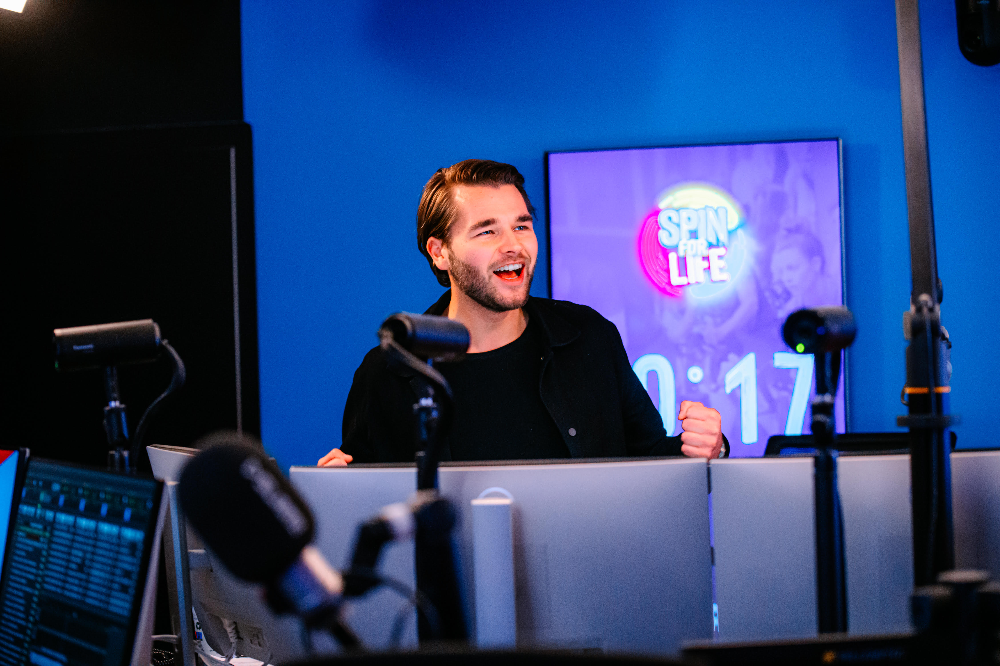

Presentator


Op de radio
Radio is waar het voor Hielke begon – en waar zijn hart nog steeds sneller van gaat kloppen. Als vaste stem van SLAM! brengt hij elke show met energie, humor en scherpte. Hielke spreekt de taal van zijn luisteraars, voelt precies aan wat er speelt en maakt van elk moment iets bijzonders. Hielke is een van de vaste presentatoren van Housuh in de Pauzuh, de SLAM! Mixmarathon en de SLAM! WKND MIX en heeft heeft meerdere shows in het weekend bij SLAM!. Daarnaast is hij als invaller regelmatig te horen bij 100%NL.
Een selectie van tevreden opdrachtgevers: 100%NL, Bedrijvingsfestival, EY, Gemeente Den Haag, Gemeente Groningen, Ministerie van Justitie en Veiligheid, OOG TV, PWC, Radio 538, RTV Noord, SBS 6, SLAM!.